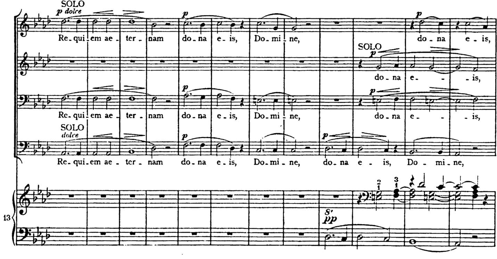
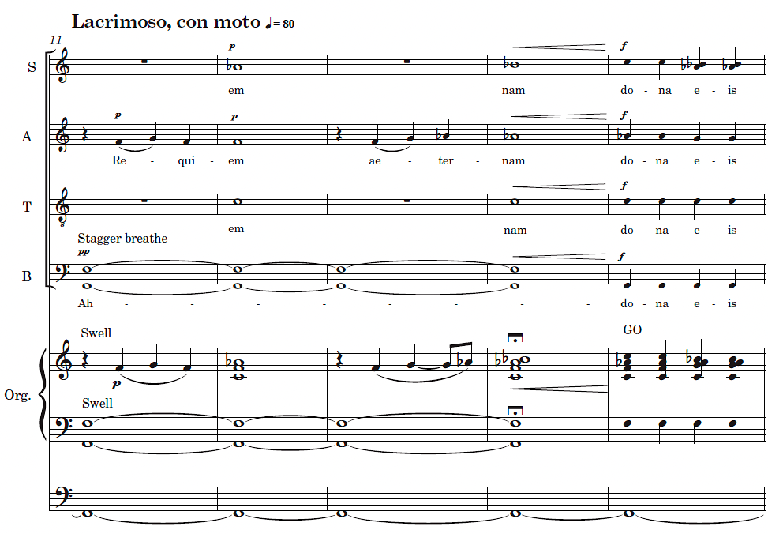
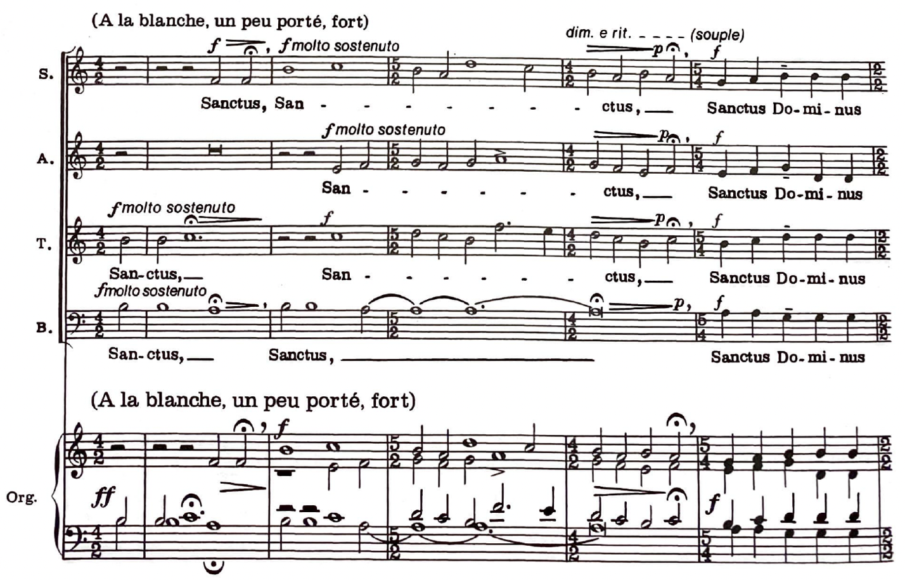
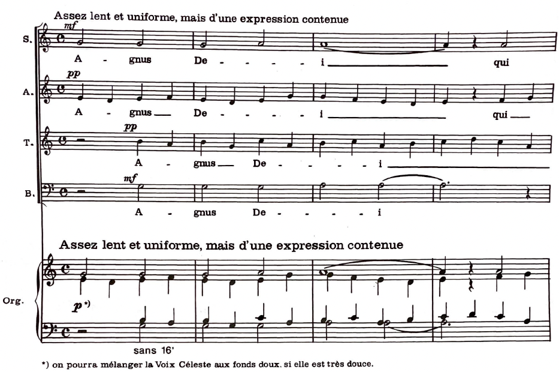

Introit
A significant shortcoming in the scholarship of Great War poetry lies in the lack of attention paid to women’s contributions. Countless anthologies of Great War poetry fill their pages with the experiences of men, combatants and non-combatants alike, occasionally acknowledging female poets with a token entry. Such neglect has resulted in the marginalization and even loss of a substantial body of women’s war poetry. Their narratives, often at odds with the dominant masculinist perspective of the early twentieth century, were deemed unfit for artistic or musical exploration or extensive in-depth scholarly study. Consequently, poems by women were underutilized compared to those composed by men.
A Great War Requiem seeks to rectify the aforementioned oversight by bringing awareness to the power of female perspectives in Great War poetry through the creation of a researched musical composition — A Great War Requiem. Therefore, the purpose of this study is to create a War Requiem composition that brings awareness to female narratives of the Great War by using Great War Poetry by women poets. The work incorporates poignant poems by Vera Brittain, Winifred M. Letts, Margaret Cole, and Josephine Preston Peabody, weaving their voices into the fabric of the Requiem Mass’ musical narrative. By integrating these previously marginalized perspectives, A Great War Requiem intends to broaden the understanding of the impact of the Great War and offer a more nuanced account of the female human experience during the aforesaid period.
Primary Composition Goal
The goal of the study was focused on the creation of a substantial music composition, specifically a War Requiem, with the following goal:
G1 Incorporate Requiem Mass plainchant into the melodic content and harmonic framework of a War Requiem composition.
Limitations
The study, A Great War Requiem, acknowledges certain limitations deliberately imposed to optimize focus and practicality. Firstly, background research concerning the Requiem Mass was tailored specifically to subjects, themes, and historical figures directly informing the dissertation’s original composition, A Great War Requiem. Thus, discussions of Requiem Mass plainchant were confined to its utilization within A Great War Requiem’s movements. Similarly, investigations into women’s poetry of the era centered upon four prominent figures, with analysis remaining closely tied to works incorporated into or thematically resonant with the composition. Finally, the analysis of A Great War Requiem emphasizes a thematic exploration of Requiem Mass plainchant motifs, thereby accomplishing my compositional goals.
Compositional Constraints
The A Great War Requiem composition likewise adheres to parameters designed to enhance both feasibility and artistic impact. The work is structured into seven movements with a total duration of approximately 40 minutes and reflects the practical consideration that Requiems exceeding an hour are less frequently performed, with notable exceptions being monumental works such as those by Verdi, Brahms, and Britten. The orchestration was limited to SATB choir and organ, a choice aimed at simplifying programming logistics and championing the organ’s expressive potential within contemporary music composition.
Rationale
The aforementioned limitations and compositional constraints demonstrate a balance between scholarly rigor and practical execution. The narrowed focus enables a deeper exploration of the core relationships between the composition, its historical contexts, and the selected Great War poetry. Furthermore, the compositional constraints promote a more accessible and performable work, potentially fostering greater engagement with both the music of A Great War Requiem and the themes it explores.
Background: Brief Overview of the Great War
If war should break out, no one can estimate its duration or see when it will end. The greatest powers of Europe, which are armed as never before, will fight each other. None can be annihilated so completely in one or two campaigns that it would declare itself vanquished and be compelled to accept hard conditions for peace without any chance, even after a year’s time, to renew the fight. Gentlemen, it might be a seven or even a thirty years’ war – but woe to him who sets Europe alight and first throws the match into the powder barrel! —General Helmuth von Moltke, Chief of General Staff, Imperial German Army
The Great War (1914-1918), also known as the First World War or WWI, was one of the most consisting of German, Austro-Hungarian, Ottoman, and Bulgarian empires. Great War battles were fought on numerous fronts and campaigns, including the Western Front, The Eastern Front, the Sea, Gallipoli, Salonika, Mesopotamia, Italy, Palestine, and Sinai.
The Great War put an end to empires, saw countless buildings bombarded into dust, slaughtered 9, 722,00 soldiers, took 9,500,000 civilian lives, and left over 21 million soldiers permanently injured and psychologically fractured. Nearly a million British soldiers, over one-half million French Soldiers, one-half million Russian Soldiers, two million German soldiers, 1,100,000 Austro-Hungarian, 460,00 Italian, 115,00 American, 320,00 Turkish, and 90,00 Bulgarian soldiers lost their lives in the war. The Great War left fractured societies across the globe, struggling to cope with famines, starvation, and the Spanish Flu. The Great War made the populations of the world vulnerable to the Spanish Flu, a pandemic that killed over 50 million people.
Background: Requiem Mass
Since time immemorial, humans have sought a way to commemorate their dead through rituals.
in the tenth century,11 although the Requiem Mass itself was not fully established until the thirteenth century. Most of the analysis of the Requiem Mass texts in the present study has been limited to the text and plainchants used in A Great War Requiem. The plainchants are the Introit (Requiem aeternam), Kyrie, a fragment of the Sequence Dies Irae, Pie Jesu (which is the final couplet from the Dies Irae), Sanctus, Communion (Lux aeterna), and Postcommunion (Requiescant in pace).
The Requiem Mass Texts and Plainchants
In conjunction with prayers, scripture readings, ceremonial gestures, religious artifacts, and sacraments, the plainchant featured in Requiem Masses plays a pivotal role in the liturgical rites of the Roman Catholic Church. Its function is multifaceted, sometimes serving to elucidate the meaning of the text, facilitate clear pronunciation of the words, enhance the solemnity of the service, and promote a sense of communal unity among worshippers.
The texts employed in Requiem Masses derive from various sources, including biblical passages, liturgical traditions, and canonical poetry. The standard texts used in the Roman Catholic Requiem Mass are made up of the following:
1. Introit (Requiem aeternam)
2. Kyrie
3. Gradual (Requiem aeternam) 4. Tract: Absolve Domine 5. Sequence: Dies Irae 6. Offertory (Domine Jesu Christe) 7. Sanctus, Benedictus 8. Agnus Dei 9. Communion: Lux aeterna 10. Post-Communion: Requiescat in pace
Composers have often used common additions and variants of the texts, including Pie Jesu, Libera me, and Post-communion (In paradisum). The Requiem Mass employs simple monophonic plainchant melodies set to texts that focus on depth to the chants. A comprehensive elucidation of the liturgical order chant and the characteristics and associated modes of these chants is provided in Table 1 below. TABLE 1. Plainchants in the Requiem Mass Parts of the Requiem Mass in Liturgical Order Mode Characteristics Introit 6 S, N Kyrie 6 S, N, M Gradual 6 S, N, M Tract 8 S, N, M Sequence 1 S, N Offertory 2 S, N, M Sanctus 2 S, N Agnus Dei 2 S, N Communion 8 S, N Requiescat in pace 8 S, N Notes. S, N, and M stand for the terms syllabic (S), neumatic (N), and melismatic (M), respectively.
The first item of plainchant in the Requiem Mass, known as the Introit, encompasses the solemn The plainchant for the Introit is written in mode 6 and is primarily neumatic and not overly embellished (see Example 1). A Great War Requiem incorporates only the plainchant melody for the text “Requiem aeternam” and omits the plainchant on “Te decet hymnus ….” EXAMPLE 1. Introit: Requiem aeternam, Requiem Mass, in Liber Usualis: plainchant. INTR. R 6 E- qui- em * æ- tér- nam do- na e- is Dó- mi- ne: et lux per- pé- tu- a lú- ce- at e- is. Ps. Te de- cet hym-nus De - us in Si- on, et ti- bi red- dé- tur vo- tum in Je- rú- sa- lem: * ex- áu- di o- ra- ti- ó- nem me- am, ad te om- nis ca- ro vé- ni- et. Ré- qui- em.
Following the Introit is the Kyrie, an acclamation text derived from an expression used in old EXAMPLE 2. Kyrie, Requiem Mass, in Liber Usualis: plainchant. K 6 Y- ri- e * e- lé- i- son. iij. Chris- te e- lé- i- son. iij. Ký- ri- e e- lé- i- son. ij. Ký- ri- e * e- lé- i- son.
The next part of the Requiem Mass used in A Great War Requiem is the Sequence Dies Irae, a fiery sermon full of judgment and condemnation. The Dies Irae, one of the most famous sequences and has contested origins. The late Alec Robertson argues that the Franciscan monk Thomas of Celano is probably the poem’s author. The sequence poem contains 18 rhyming stanzas. A Great War Requiem uses just the first line, “Dies irae, dies illa,” translating, “Day of wrath, this day” from the first stanza of the poem (See Example 3). EXAMPLE 3. Dies Irae, Requiem Mass, in Liber Usualis: plainchant melodic fragment. Seq D 1 I-es i-rae, di-es il-la, Solvet sae-clum in fa-víl-la : Teste David cum Sibýlla.
The Dies Irae plainchant melody is one of the most recognizable. It has been used by countless composers such as Hector Berlioz and Antonín Dvořák. In addition, the Dies Irae plainchant has been worked into film scores by numerous film composers such as Wendy Carlos and Rachel Elkind. A Great War Requiem incorporates the first seven notes of the Dies Irae plainchant, F-E-F-D-E-C-D, into all of the movements. See Chapter IV Analysis for more about how the plainchant was used as a structural element for the entire composition.
In addition to using the first seven notes of the Dies Irae plainchant and the first line of text, A Great War Requiem also uses “Pie Jesu,” the last couplet of the Dies Irae (see Example 4).
Pie Jesu Domine, Dona eis Requiem Pie Jesu Domine, Dona eis requiem sempiternam. EXAMPLE 4. Pie Jesu, Requiem Mass, in Liber Usualis: plainchant. P 1 i- e Je- su Dómi-ne, * do-na e- is ré-quiem. Pi- e Je- su Dómi- ne, * do- na e- is ré-quiem. Pi- e Je- su Dómi- ne, * do- na e- is ré- quiem ** sem-pi- térnam. A- men.
The Pie Jesu has been set as a stand-alone movement in Requiem Masses by numerous composers, including Antonín Dvořák, Gabriel Fauré, Maurice Duruflé, Andrew Lloyd Webber, and John Rutter.
A Great War Requiem incorporates a plainchant melody from the Sanctus, a part of the Mass Ordinary included in Requiem ceremonies. The choir typically performs the Sanctus text after a prayer spoken by the celebrant. While A Great War Requiem omits the Sanctus text itself, it incorporates the plainchant melody (see Example 5) within the movement titled “Your Name.” The Liber Usualis lists eighteen plainchant melodies for the Sanctus, along with three optional melodies. The melody in Example 5 finds frequent use in Requiem Masses. EXAMPLE 5. Sanctus, Requiem Mass, in Liber Usualis: plainchant melody. S 2 ANCTUS, Sanctus, Sanctus Dó- mi- nus De- us Sá- ba- oth. Ple- ni sunt cœ- li et ter- ra gló- ri- a tu- a. Ho- sán- na in ex- cél- sis. Be- ne- díc- tus qui ve- nit in nó- mi- ne Dó- mi- ni. Ho- sán- na in ex- cél- sis.
A Great War Requiem next features the Requiem Mass communion Lux aeterna. The text itself composition revisits the concepts of light and eternal rest, echoing themes that were introduced in the Introit. cum sanctis tuis in aeternum, quia pius es. Requiem aeternam dona eis Domine, et lux perpetua luceat eis, quia pius es. A Great War Requiem utilizes most of the Lux aeterna plainchant melody, which is in mode 8 and structured in two large sections (See Example 6). EXAMPLE 6. Lux aeterna, Requiem Mass, in Liber Usualis: plainchant. Comm 8 L UX ae- tér- na lú- ce- at e- is, Dó- mi- ne : Cum san- ctis tu- is in ae- tér- num, qui- a pi- us es. v. Ré- qui- em ae- tér- nam do- na e- is Dó- mi- ne, et lux per- pé- tu- a lú- ce- at e- is. Cum san- ctis tu- is in ae- tér-num, qui- a pi- us es.
A Great War Requiem employs the final Requiem Mass plainchant melody (see Example 7) from the post-communion, “Resquiescant in pace” (meaning “Rest in peace”). The phrase comes from spoken or chanted post-communion texts delivered after the communion. EXAMPLE 7. Post-Communion: Requiescant in Pace, Requiem Mass, in Liber Usualis: plainchant. R E- qui- é- scant in pa- ce. r. A- men.
In Roman Catholic Church services, plainchant from the Requiem Masses fulfills a liturgical function alongside prayers, readings, ritual actions, service objects, and sacraments. It serves to emphasize the meaning of the text, allows for clear projection of the words, heightens the solemnity of the service, and fosters a sense of communal connection.
Composed Requiem Masses: 15th Century – 20th Century
Up until the late fifteenth century, only the plainsong Requiem Mass was used in the liturgy. The year 1473 saw the first polyphonic Requiem, a now-lost work by Guillaume Dufay. Polyphonic Requiem Mass settings did not replace the plainsong Requiem Mass, but rather, they were the first of many elaborate settings created in the coming centuries. Renaissance composers like La Rue used a variety of textures, number of voices, meters, and rhythmic proportions and employed declamatory and contrapuntal techniques in their Requiems.
The seventeenth century saw the expansion of styles, forms, instruments, and ensembles; ritornello and more choral textures such as homophony, polychoral, and antiphonal. In the late seventeenth century, there was an emphasis on the four-part chorale style. Composers such as Marc Antoine Charpentier, Christoph Strauss, and Domenico Cimarosa are among numerous composers of the seventeenth century who wrote Requiems.
The eighteenth-century Requiem incorporated longer forms, new styles, Sturm und Drang characteristics, the concertante mass style, bel canto singing, refined choral textures, orchestral effects of the Mannheim School, and Neapolitan style. Composers still often retained style antico style characteristics with polyphonic sections and fugal writing. Examples of the aforementioned styles and techniques can be found in Requiems composed by Johann Michael Haydn, Joseph Leopold Edler Eybler, Luigi Cherubini, and Wolfgang Amadeus Mozart.
Numerous 19th-century Requiems by composers such as Hector Berlioz, Giuseppe Verdi, EXAMPLE 8. Franz Liszt, “Requiem aeternam,” in Requiem, mm.-24: Cæcilian style. Liszt includes partial quotes of the Dies Irae pitches Ab-G-Ab-F in melodic fragments in mm. 17-18, in the tenor and the pitches Db-C-Db-Bb in mm. 21-22 in the bass; both sets of pitches are transposed versions of the first four pitches of the Dies Irae (see the red boxes in Example 8). Also, Liszt composed an imitation between bass II and Tenor I against a paired Bass I and Tenor II in mm. 22-24, which is evocative of music from the Renaissance period (See the green box in Example 8).
The tradition of composing Requiem Masses continued into the twentieth century, a century

Howells, Dmitry Kabalevsky, Henri Tomasi, Maurice Duruflé, and Jehan Alain composed war or peace- inspired Requiems. The catastrophes and human atrocities from the Second World War led to works like Ronald Senator’s Kaddish for Terezin (Holocaust Requiem). One of the most recognized Requiems, and perhaps one of the most culturally significant works composed in response to war and ongoing tensions during the Cold War, is Benjamin Britten’s War Requiem. The pacificist and hallmark work was completed for the 1962 consecration of the new Cathedral Church of Saint Michael, also known as Coventry Cathedral, Great Britain. Britten incorporates Wilfred Owen’s War Poetry, specifically “Anthem for a Doomed Youth,” “But I Was Looking at the Permanent Stars,” “The Next War,” “Sonnet in Seeing a Piece of Our Heavy Artillery Brought into Action,” “Futility,” “The Parable of the Old Man and the Young,” and “The End” into the Requiem Mass framework. The composition calls for large forces: soloists, a choir, a boy choir, a chamber orchestra, a full orchestra with an extensive percussion section, and a portative organ.
Composers have continued to write Requiems from the late 20th century into the present.
Rebecca Dale, and countless others have carried on the Requiem Mass composition tradition. Despite the ongoing composition tradition, only a handful of Requiems receive regular performances: Mozart’s Requiem, Verdi’s Requiem, Berlioz’s Messe des morts, Fauré’s Requiem, Brahms’s Ein Deutsches Requiem, Duruflé’s Requiem, and Rutter’s Requiem.
Works Studied
A Great War Requiem incorporates idioms from the medieval, Renaissance, Late Romantic, and Modern periods. In preparing the composition and dissertation, I studied numerous scores and sources. The most important Requiems studied were those by Gabriel Fauré, Maurice Duruflé, and Jehan-Ariste Alain, elements from which are included in the next section. Fauré Requiem One of the most popular Romantic Requiem settings that I consulted is the Requiem Op. 48 by Fauré’s Requiem, Op. 48, has earned recognition as a monumental and enduring work in the Requiem genre. His plaintive “Pie Jesu” was revered by his contemporaries: for example, Camille Saint- Saens remarked, “Just as Mozart’s is the only ‘Ave verum corpus,’ this is the only Pie Jesu.” Op. 48 was initially a liturgical work and composed for small forces, as Fauré scored it for SATB choir, soprano soloist, baritone soloist, and a small orchestra. Fauré’s had created different settings for his Requiem. The first included just Introit et Kyrie, Sanctus, Pie Jesu, Angus Dei, and In Paradisum. In the concert version, Fauré added an Offertory, Domine Jesu Christe, and the Responsory: Libera me, and the 1893 version added depth to the orchestra with the addition of bassoons, horns, and trumpets and changed the orchestration and range of “In paradisum” by adding violins. A vocal score arrangement of Fauré’s original setting of his Requiem Op. 48 informed some of [Title] for SATB Voices and Piano EXAMPLE 9. Gabriel Fauré, Requiem Op. 48, mm.1-3: reduction of the organ and choir. ° b4 j Soprano & 4 ∑ œ œ œ™ œ ˙ ˙
Re - qui - em ae - ter - nam
4 j Alto &b4 ∑ œ œ œ™ œ ˙ ˙
Re - qui - em ae - ter - nam
4 Tenor & b 4 ∑ œœ œœ œœ ™™ œœ ˙˙ ˙˙ ‹ J
Re - qui - em ae - ter - nam
? 4 ∑ œœ œœ œœ ™™ œœ ˙˙ ˙˙ Bass ¢ b4 J
Re - qui - em ae - ter - nam
4 &b4 ∑ w ˙˙ œœ œ {
w p Organ w w ˙™ œ ?b 4 w 4 w ˙™ œ ff p ?b 4 Pedals 4 ff w w ˙™ œ EXAMPLE 10. Cypret, “Requiem aeternam et Rest, A Great War Requiem, mm. 11-15. Maurice Duruflé’s Requiem This Requiem is not an ethereal work that sings of detachment from earthly worries. It reflects in the immutable form of the Christian prayer, the agony of man faced with mystery of his ultimate end. It is often dramatic, or filled with resignation, or hope or terror, just as the words of the scripture themselves which are used in the liturgy. It tends to translate human feelings before their terrifying, unexplainable or consoling destiny.
—Maurice Duruflé47 Maurice Duruflé composed his Requiem Op. 9 during the turbulent years of the Second World

the Vichi Government to write a large work;48 he was originally commissioned to write an orchestral work but opted for a Requiem—a work that was derived from his organ suite and almost entirely based on Requiem Mass plainchant—and he received a generous 30,000 francs for it. Duruflé never divulged the information behind the commission, and his estate denies the story. Regardless of its origins as a commission for the Vichy Regime, the Requiem Op. 9 is a compelling work, a staple in the Requiem Mass canon, and is performed regularly.
Duruflé closely adheres to the Requiem Mass plainchant and its forms, while applying an EXAMPLE 11. Duruflé, “Requiem aeternam,” mm. 1-3: Requiem Mass plainchant melodies, Maurice Andante moderato = 60 Duruflé, Requiem Op. 9, © Éditions Durand, Paris, France, 1948, reproduced with permission. Soprano Alto sostenuto Tenor Re - qui - em æ sostenuto Bass Re - qui - em æ G.R. Fonds 8 G.R. Organ R. Ped. Soubasse Bourdon 8 Flute 8 Also, Duruflé set the plainchant melodies in a contrapuntal style with points of imitation as demonstrated in Kyrie mm. 1-9 (see Example 12).
EXAMPLE 12. Duruflé, “Kyrie,” Requiem Op. 9, mm.1-9: Kyrie, plainchant melodies, Maurice Duruflé, Requiem Op. 9, © Éditions Durand, Paris, France, 1948, reproduced with permission.
Andante = 69
Tenor
Ky - - ri - e e - - - le - i Bass Ky - - ri - e e - - - le - i - son, e G. Trompette 8 R. Bourdon 8 G. Fonds 8 doux G. Ped. Soubasse 16 Bourdon 8 Ped. G. Soprano Ky - ri - e e - - - le - i - son, e Alto Ky - - ri - e e - - - le - i - son, e Tenor son, e - le - - i - son. Ky - ri - e - - e Bass le - i - son, e - le - - - - - - - i - son. sempre Duruflé composed his solemn yet stunning “Pie Jesu” for Mezzo-Soprano, cello, and organ. The melody comes from the Requiem Mass plainchant used for “Pie Jesu” (see Example 13). EXAMPLE 13. Duruflé, “Pie Jesu,” Requiem Op. 9, mm. 1-9: Maurice Duruflé, Requiem Op. 9, © Éditions Durand, Paris, France, 1948, reproduced with permission. Andante espressivo = 60 MEZZO-SOPRANO SOLO
Pi - e Je - su Do - mi - ne,
VIOLONCELLE (ad libitum) R. Fonds 8 deux G. Bourdon 8 Flute 8 Principal 8 Ped. G. 5 do - na e - is re - qui - em. espressivo (f) Jehan Ariste-Alain: Messe de Requiem Jehan Ariste-Alain (1911-1940) was a French composer and organist whose life was cut short during the Second World War. His Messe de Requiem is a rare and not well-known work and is another example of a Requiem composed in the Cæcilian conservative style. Alain only set three movements: “Kyrie,” Sanctus,” and Agnus Dei.” Like Maurice Duruflé, he incorporated the Requiem Mass plainchant into his composition setting it in filled out chorale and polyphonic styles (see Examples 14-15.). EXAMPLE 14. Jehan-Ariste Alain, “Kyrie,” in Messe de Requiem, mm. 1-2: Jehan-Ariste Alain: Messe de Requiem, Arr. Marie-Claire Alain Copyright © 1978 by Ludwig Doblinger (Bernhard Herzmansky) GmbH & Co KG, Vienna (Dobl. 44 121): With kind permission of the publisher. En decomposant a la e. sans lenteur / \ , Soprano Ky - - ri - e - - - - e - - - - le - i - son. Alto Ky - - ri - e - e - - - - - - - le - i - son. Tenor Bass Ky - - ri - e - - - - e - - - - le - i - son. Organ sans 16&#x; à la Pédale Alain’s harmonic language and writing style in the Kyrie is neo-Renaissance, with limited accented or unprepared dissonances, he mostly uses a contrapuntal texture. The Sanctus and Angus Dei, he composed dissonances more freely, beginning with accented major and minor seconds (see Example 15). EXAMPLE 15. Alain, “Sanctus,” in Messe de Requiem, mm. 1-5: Jehan-Ariste Alain: Messe de Requiem, Arr. Marie-Claire Alain Copyright © 1978 by Ludwig Doblinger (Bernhard Herzmansky) GmbH & Co KG, Vienna (Dobl. 44 121): With kind permission of the publisher. In his final movement, Angus Dei, Alain uses points of imitation in the outer voices and inner voices, but when the pairs are combined, the texture is quasi-chorale-like (See Example 16).

EXAMPLE 16. Alain, “Agnus Dei,” in Messe de Requiem, mm. 1-4: Jehan-Ariste Alain: Messe de Requiem, Arr. Marie-Claire Alain Copyright © 1978 by Ludwig Doblinger (Bernhard Herzmansky) GmbH & Co KG, Vienna (Dobl. 44 121): With kind permission of the publisher.
Summary of Works Studied
Fauré’s, Duruflé’s, and Alain’s Requiems provided me with historical contexts, approaches to choral writing, strategies for writing for organ and choir, and examples of the thematic and stylistic development of Requiem Mass plainchant. Specifically, Fauré’s Requiem Op. 48 was an inspiring example of elegance and beauty, whereas Maurice Duruflé’s Requiem Op. 9 demonstrated the integral use of plainchant in impressionist harmonic language, and Jehan Ariste-Alain’s Messe de Requiem is a fine example of style that combines Cæcilian and modern influences.

Critical Requiem Mass Sources Relevant to the Study
The Requiem Mass is one of the longest-enduring musical genres and has a written tradition that spans from the 10th century to the present day. In spite of its long history, the Requiem Mass has a limited amount of music scholarship devoted to it. Before 2022, only three books covered the genre: Alec Robertson’s Requiem: Music of Mourning and Consolation, Robert Chase’s Dies Irae a Guide to Requiems, and Robert Chase’s Memento Mori: A Guide to Contemporary Memorial Music. In addition to these three books, countless dissertations such as Harold Luce’s dissertation “Volume I: The Requiem Mass From Its Plainsong Beginnings To 1600 and Volume II: Selected Requiem Masses” attempted to make a mark on the Requiem Mass genre,53 but fell short of capturing part of the vast and complicated history of the Requiem Mass. It is only recently that a community of scholars at Leuven University is attempting to provide in-depth scholarship on the Requiem Mass genre with the five-volume series The Book of Requiems. Alec Robertson (1928-2002) was a music critic and the first to write a monograph on critically about the Requiem Mass as a genre. Robertson covers the Requiem from its plainsong beginnings and highlights well-known Requiems during the major style periods: Renaissance requiems composed by Dufay, Ockeghem, Brummel, de La Rue, Morales, Palestrina, Anerio; Classical requiems by Michael Hayden, and Mozart, and Cherubini; Romantic and twentieth-century Requiems by Berlioz, Verdi, Dvořák, Fauré, Duruflé, and Piazetti; German Requiems by Schütz and Brahms. In addition to Requiems, Robertson discusses Anglican funeral music by Purcell, Croft, and Davies; as well as Memorial music, laments, and modern elegiac works: Eglar’s Dream of Gerontius, Hindemith’s When Lilacs Last in the Door-yard Bloomed, Requiems of the First World War, and Britten’s War Requiem.
Robert Chase, a music professor and organist, wrote two books on the Requiem Mass genre: Dies Irae: A Guide to Requiems and Momento Mori: A Guide to Contemporary Memorial Music, which are staples of Requiem Mass scholarship. Dies Irae provides critical assessments of the Requiem Mass genre from the Middle Ages through the twentieth century. The large survey Dies Irae provides evaluations and summaries of numerous Requiem Mass compositions from each major period. Chase also discusses information on the different rites and subgenres of the Requiem Mass, such as the War Requiem, Elegy, and instrumental requiems.
A later edition to the Requiem Mass scholarship is Memento Mori, Robert Chase’s sequel to Dies Irae Guide to Requiems, which covers a vast array of modern Requiems from John Adler Nan- Cheng Chien, Morten Laurdison, John Taverner, and Robert Wittinger. In the second decade of the 21st century, the newest offering in the Requiem Mass genre is the five-volume Book of Requiems, which comprises scholarly articles on the Requiem Mass composed by top musicologists, theorists, and composers such as Pieter Bergé, Antonio Chemotti, Sarah Ann Long, John Milsom, Fabrice Fitch, Honey Meconi, M. Jennifer Bloxam, Tess Knighton, and Stephen James Rice. The Book of Requiems is an important resource in the Requiem Mass literature. Editor David Burn states:
In so doing, the Book is intended as an authoritative reference publication that will serve as a first port-of-call for musicologists, music theorists, and performers, both professional and students interested in deepening their knowledge of a Requiem they love, in discovering new ones, and in appreciating how Requiems relate to one another and to wider musical culture. The scholars meticulously crafted well-researched articles for the first two volumes, focusing on important requiems composed between 1450-1650. The only downside to the Book is that the series starts with the Renaissance period. Sara Ann Long introduces the “The Plainsong Requiem Mass Tradition” in Chapter I of the first Book, but she discusses the plainchant as it relates to the Renaissance period and the eight Requiem Masses covered in the Book of Requiems: 1450-1550. I argue that the Medieval Requiem Mass plainchant is integral to the genre, and it is a discredit to the Book that a volume has not been devoted to the origins of the Requiem Mass, the history of Medieval Requiem Mass, and the Requiem Mass plainchants.
Ultimately, all of the books were critical the composition process because they provided
Summary
The following chapter serves as a foundational prologue to A Great War Requiem, establishing the context for its subsequent research and composition. It identifies the critical issue of the underrepresentation of female perspectives in Great War poetry and presents A Great War Requiem researched composition project as a means to amplify these voices through a thoughtfully researched musical work. The chapter elucidates the specific goals and necessary limitations of the study, emphasizing the integration of Requiem Mass plainchant, the thematic exploration of rest, light, death, and anti-war sentiment, and the critical analysis of selected female poets. A background section furnishes a concise historical overview of the Great War (1914-1918), outlining its origins, significant conflicts, and the profound societal toll.
Notes
- 6. Helmuth von Moltke, quoted in Robert T Foley, German Strategy and the Path to Verdun: Erich von Falkenhayn and the Development of Attrition, 1870–1916 (Cambridge: Cambridge University Press, 2005), 23.
- 7. Peter Hart, The Great War: A Combat History of the First World War [2013] (Oxford: Oxford University Press, 2015), 468.
- 8. Hart, The Great War, 468.
- 9. “The Deadly Virus: The Influenza Epidemic of 1918,” National Archives and Records Administration, accessed January 25, 2023, https://www.archives.gov/exhibits/influenza-epidemic/.
- 10. The Benedictines of Solesmes, The Liber Usualis, 1806, 1816.
- 11. Theodore Karp, Fabrice Fitch, and Basil Smallman, “Requiem Mass,” Grove Music Online, 2001; accessed January 25, 2024; https://www-oxfordmusiconline-com.unco.idm.oclc.org/grovemusic/view/10.1093/gmo/9781561592630. 001.0001/omo-9781561592630-e-0000043221; Antiphonale missarum Sancti Gregorii, Xe siècle, Codex 47 de la Bibliothèque de Chartres, Chartres, France; Bibliothèque municipale, Laon, France, Graduale, Codex laudunensis, Ms. 239, 88v12, https://bibliotheque-numerique.ville-laon.fr/ressources-numerisees/item/1457-graduel-de-laon?offset=1.
- 12. Karp, Fitch, and Smallman, “Requiem Mass.”
- 13. See 4 Esdras 2: 34, 35 in Michael D. Coogan, ed., The New Oxford Annotated Bible with the Apocrypha (New York: Oxford University Press, 2018, 1680); Liber Usualis, 1805-1819; The Dies Irae poem is commonly attributed to the 13th Century Monk Thomas of Celano; see Alec Robertson, Requiem: Music of Mourning and Consolation (New York: Frederick A. Praeger. Publishers, 1967), 15.
- 14. See the Benedictines of Solesmes, Liber Usualis, 1807-1817.
- 15. “Neumatic style,” Grove Music Online, 2001; accessed 3 January, 2024, https://www.oxfordmusiconline.com/ grovemusic/view/10.1093/gmo/9781561592630.001.0001/omo-9781561592630-e-0000019788.
- 16. “Melismatic style,” Grove Music Online, 2001; accessed 3 January, 2024, https://www.oxfordmusiconline.com/ grovemusic/view/10.1093/gmo/9781561592630.001.0001/omo-9781561592630-e-0000018333.
- 17. Text comes from 4 Esdras 2: 34, 35; Psalm 64: 2-3; The Benedictines of Solesmes, The Liber Usualis, 1807; The Benedictines of Solesmes, Graduale Romanum (Tournai, Belgium: Desclée, 1961), 94.
- 18. The Benedictines of Solesmes, Liber Usualis, 1807; all examples are in the public domain and were created using Source and Summit, “The Source and Summit Editor,” https://www.sourceandsummit.com/editor/alpha/.
- 19. Richard L. Crocker, “Kyrie eleison,” in Grove Music Online, accessed 10 December 2023; https://doi.org/ 10.1093/gmo/9781561592630.article.15736.
- 20. The Benedictines of Solesmes, The Liber Usualis, 1807-1808.
- 21. The Benedictines of Solesmes, Liber Usualis, 1807-08.
- 22. Robertson, Requiem, 25.
- 23. The Benedictines of Solesmes, Liber Usualis, 1810-13.
- 24. Hector Berlioz, Symphonie Fantastique, [1830] (New York: Dover Publications, 1997); Antonín Dvořák, Symphony No. 7 in D Minor, Op. 71, B 141 (Berlin: Simrock, 1885).
- 25. Stanley Kubrick, Diane Johnson, and Stephen King, The Shining, [1980] (Warner Home Video, 2001), VHS.
- 26. The Benedictines of Solesmes, Liber Usualis, 1813.
- 27. The Benedictines of Solesmes, Liber Usualis, 1814.
- 28. The Benedictines of Solesmes, Liber Usualis, 1814.
- 29. The Benedictines of Solesmes, Liber Usualis, 1815.
- 30. The Benedictines of Solesmes, Liber Usualis, 1815.
- 31. See Hector Berlioz, Grande messe des morts, Op. 5 [1838] (Kassel, Germany: Bärenreiter, 1978); Giuseppe Verdi, Messa da Requiem [1874] (Leipzig, Germany: Ernst Eulenberg, ca. 1910); Johannes Brahms, Ein Deutches Requiem, Op. 45 [1868] (Mineola: Dover Publications, 1987); Alfred Bruneau, Requiem pour Soli et Chœrs (Paris: Paul Dupont, 1895); Antonín Dvořák, Requiem, Op. 89 (London: Novello Edition, Ewer & Co., 1892).
- 32. See Chase, Dies Irae, 243.
- 33. Franz Liszt, Requiem, edited by Philipp Wolfrum [1871-1876] (Leipzig, Germany: Breitkopf & Härtel, 1918), 1.
- 34. John Foulds, A World Requiem (London: W. Paxton & Co. Ltd., 1923); Alexsander Kastalsky, Commémoration fraternelle [Requiem for Fallen Heroes] (Moscow: P. Jurgenson, 1916); Max Reger, “Requiem,” Sämtliche Werke Band 28
- 35. Herbert Howells, Requiem for SATB (London, Novello & Co. Ltd., 1981); Kabalevsky, War Requiem with Russian and English Text, Op. 72 (New York: Edwin Kalmus, 1974); Henri Tomasi, Requiem (Paris: Editions Henri Lemoine); Maurice Duruflé, Requiem, Op. 9, (Paris: Éditions Durand,1948), Jehan-Christe Alain, Messe de Requiem, Op. 8, 2nd Edition, edited by Marie-Claire Alain (Österreich, Austria: Ludwig Doblinger, Bernarhard Herzmansky, GmbH & Co. KG, 1978);
- 36. Ronald, Senator and Albert H. Friedlander, Kaddish for Terezin : (In Memory of All the Oppressed) : For Chorus & Orchestra (South Croydon, United Kingdom: Alfred Lengnick & Co., 1986).
- 37. Benjamin Britten, War Requiem: Op 66 (London: Boosey & Hawkes, 1962).
- 38. Wilfred Owen, The War Poems of Wilfred Owen, edited by Cecil Day Lewis and Edmund Bluden (London: Chatto and Windus, 1964).
- 39. For more about Twentieth Century and Modern Requiems see Robert Chase, Dies Irae, 307-508; Robert Chase, Memento Mori: A Guide to Contemporary Memorial Music (Lanham, Maryland: Scarecrow Press, 2007).
- 40. Gabriel Fauré, Melodies, vol. 1, Edition B for high voice (Paris: J. Hamelle, c 1905), 35-51.
- 41. Gabriel Fauré, Complete Songs, vols. 1-3, edited by Emily Kilpatrick (Leipzig: Peters Edition Ltd, 2017).
- 42. Gabriel Fauré, Mass :Transcription of the “Messe Basse,” with English, French and Latin Texts, edited by Carroll J. Lambert (Paris: Heugel, 1972);Gabriel Fauré, Cantique De Jean Racine: [Op. 11] for Four-Part Mixed Chorus with Piano Acc. (New York: Broude Brothers, 1952); Gabriel Fauré, Requiem: Op. 48: Pour Soli, Chœur et Orchestre Symphonique: Version de
- 43. Michael Steinberg, “Gabriel Fauré: Requiem, Op. 48” in Choral Masterworks: A Listener’s Guide (Oxford: Oxford University Press, 2005), 131-137.
- 44. Gabriel Fauré, Requiem Op. 48, Ms. 410-413, Holoraph Manuscript (Paris: Bibliothèque nationale de France, Musique: Conservatoire, 1888-1893).
- 45. Gabriel Fauré, Requiem Op. 48: Version de concert, N 97b [1899-1900] (Boca Raton: Edwin F. Kalmus, 1985), 114-128.
- 46. Fauré, “Introit,” in Requiem, mm. 1-3.
- 47. Maurice Duruflé, Requiem Op. 9: An Analysis for Performance, by Robert P. Eaton, provided to Eaton by Marie Madeleine Duruflé-Chevalier, translated by Barbara S. Eaton, unpublished program notes.
- 48. James Frazier, “The Vichy Commissions,” in Maurice Duruflé: The Man and His Music, ed. Ralph P Locke (Rochester, NY: Boydell & Brewer, University of Rochester Press, 2007), 156–57.
- 49. Frazier, “The Vichy Commissions,” 157.
- 50. Frazier, “The Vichy Commissions,”162.
- 51. “I also endeavored to reconcile as much as possible with the Gregorian rhythm, as has been established by the Benedictines of Solesmes, with the demands of modern metrical notation. The rigidness of the latter, with its strong beats and weak beats recurring at regular intervals, is hardly compatible with the variety and fluidity of the Gregorian line, which is only a succession of rise and falls. The strong beats had to lose their dominant character in order to take on the same intensity as the weak beats in such a way that the rhythmic Gregorian accent or the tonic Latin accent could be placed freely on any beat of our modern tempo,” from Duruflé, “Program notes,” translated by Barbara S. Eaton.
- 52. Robertson, Requiem; Robert Chase, Dies Irae; and Robert Chase, Memento Mori: A Guide to Contemporary Memorial Music (Lanham, MD: Scarecrow Press, 2007).
- 53. Harold T. Luce, “The Requiem Mass from its Plainsong Beginnings to 1600” (PhD. diss., Florida State University, 1958).
- 54. Two volumes from the series by Pieter Bergé, Antonio Chemotti, Sarah Ann Long, John Milsom, Fabrice Fitch, Honey Meconi, M. Jennifer Bloxam, Tess Knighton, and Stephen James Rice, Book of Requiems, 1450-1550: From the Earliest Ages to the Present Period, edited by David J Burns, 1st edition. vol. 1 (Leuven, Belgium: Leuven University Press, 2022); David J. Burn and Antonio Chemotti, The Book of Requiems, 1550-1650: From the Earliest Ages to the Present Period, 1st edition, vol. 2 (Leuven, Belgium: Universitaire Pers Leuven, 2023.
- 55. Pieter Bergé, David J. Burn, and Antonio Chemotti, “Introduction,” in The Book of Requiems, 1450-1550: From the Earliest Ages to the Present Period, edited by David J. Burn (Leuven, Belgium: Leuven University Press, 2022), 15–18, https://doi.org/10.2307/j.ctv26dhjfb.6.
- 56. Sarah Ann Long, “The Plainsong Requiem Tradition,” in The Book of Requiems, 1450-1550: From the Earliest Ages to the Present Period, edited by David J. Burn (Leuven, Belgium: Leuven University Press, 2022), 19-48.